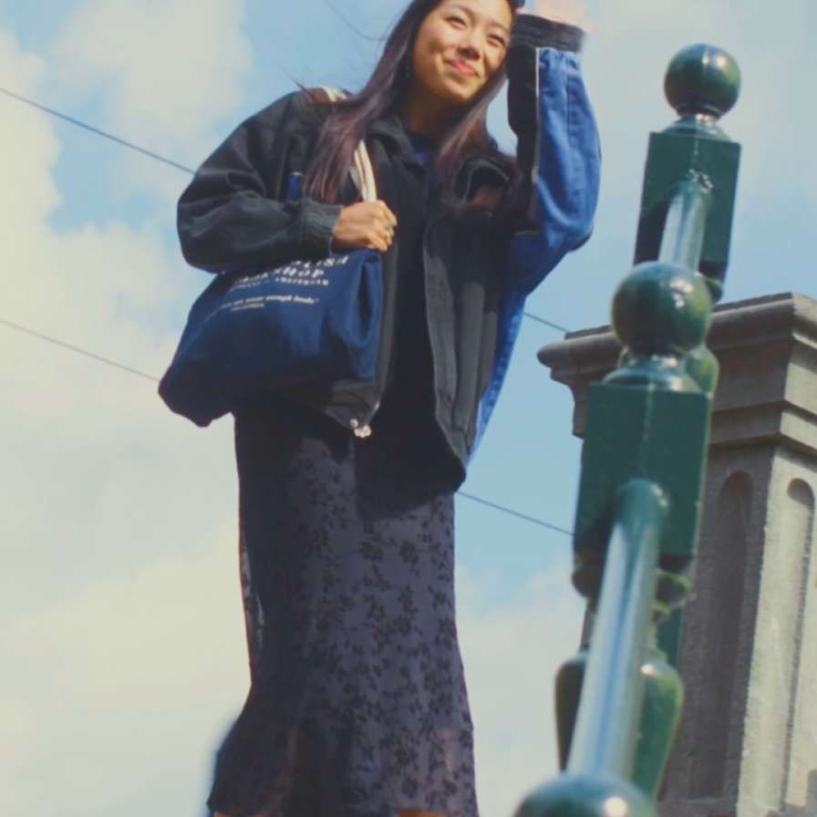

Toelatingseisen
Hav0, vwo of mbo 4
Je hebt een havo-, vwo- of mbo 4-diploma. Er gelden geen aanvullende vooropleidingseisen.
Lees meer over toelatingBachelor, voltijd, 4 jaar
Over de opleidingOntdek of de opleiding CMD in Amsterdam iets voor jou is, volg onze virtuele 360 graden tour!
Benieuwd welke projecten je gaat doen tijdens je studie Communication and Multimedia Design (CMD)?
‘’Ikzelf word vooral heel blij van de designkant; hoe gaat iets eruitzien, hoe gaat het straks werken? Om me daar verder in te specialiseren, wilde ik een minor in het buitenland volgen."
Bahaa ontwierp tijdens zijn studie een app die scholieren helpt sneller een boek te vinden in de bieb: de boekenzoeker. "Een lang proces, maar wel heel leerzaam."
Je hebt een havo-, vwo- of mbo 4-diploma. Er gelden geen aanvullende vooropleidingseisen.
Lees meer over toelatingIn jaar 1 heb je minimaal 16 contacturen per week. Daarnaast besteed je 24 uur per week met medestudenten aan projecten en onderzoeken, maak je opdrachten en bereid je je voor op lessen en tentamens.
Lees meer over studielastNaast het jaarlijks vastgestelde collegegeld moet je rekening houden met ongeveer € 300 per jaar voor boeken, readers en vakmaterialen. Houd ook rekening met de aanschaf van een laptop.
Lees meer over studiekostenJe hebt passie voor (digital) design en het creatieve proces.
Je hebt een nieuwsgierige, onderzoekende houding en bent kritisch.
Je hebt interesse in multimedia en vindt het leuk om met digitale ontwerpen te werken.
Je kunt goed samenwerken en staat open voor andere ideeën.
Je bent bereid om nieuwe digitale vaardigheden te leren en toe te passen.
